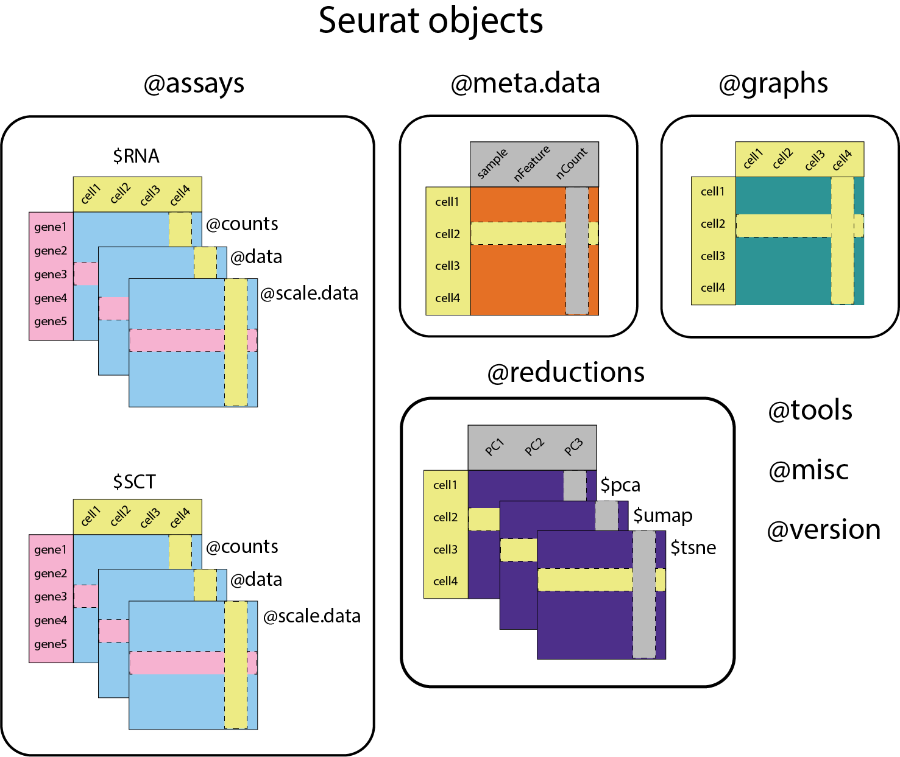
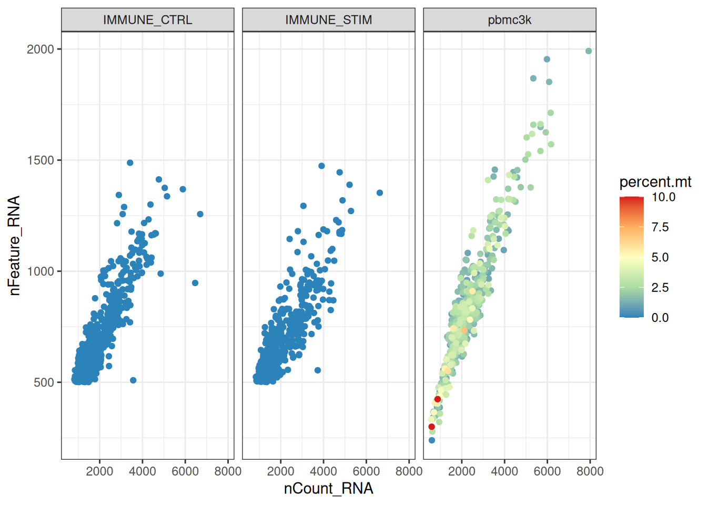
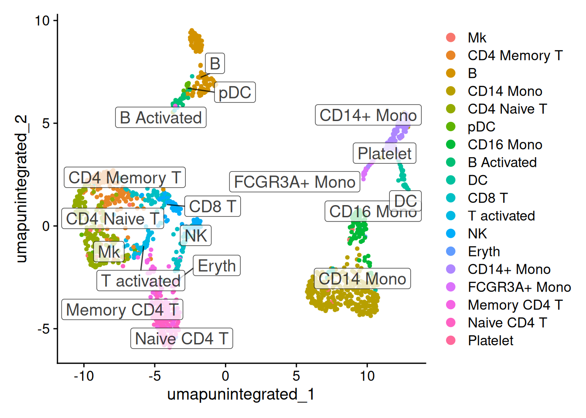
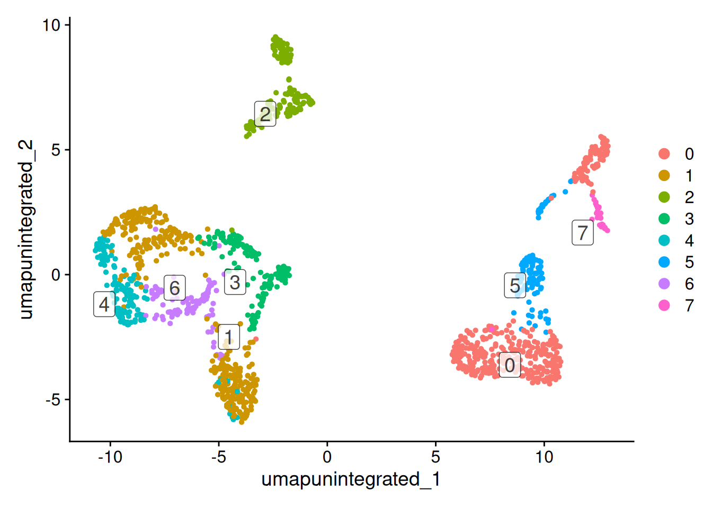
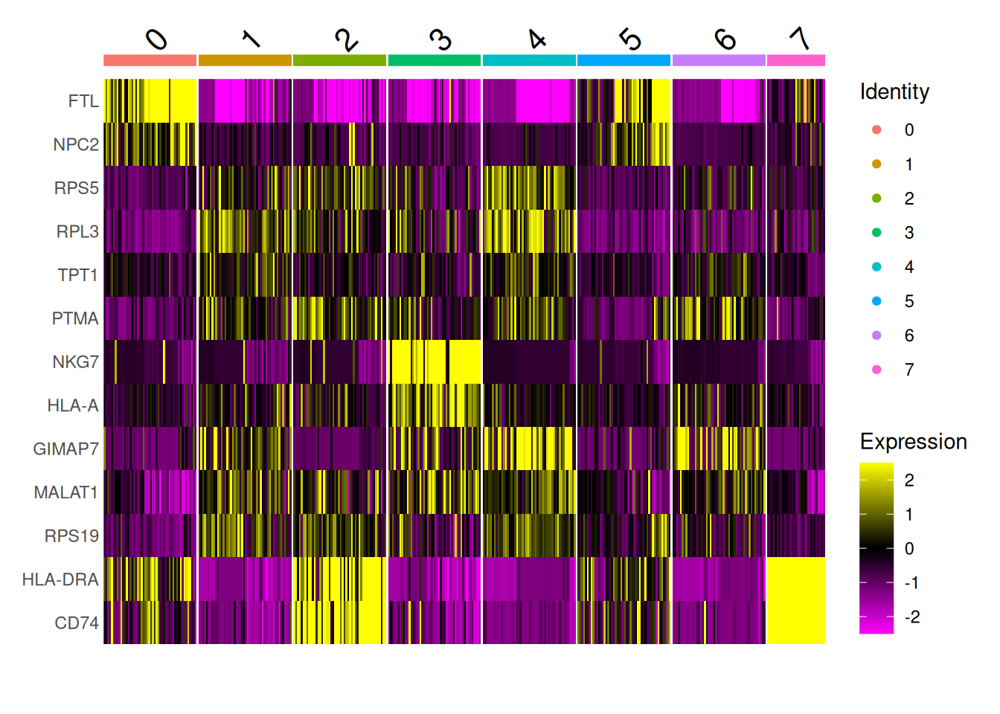
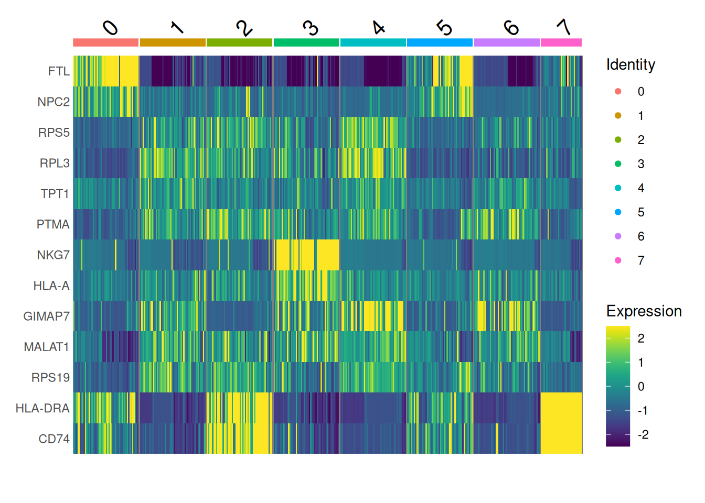
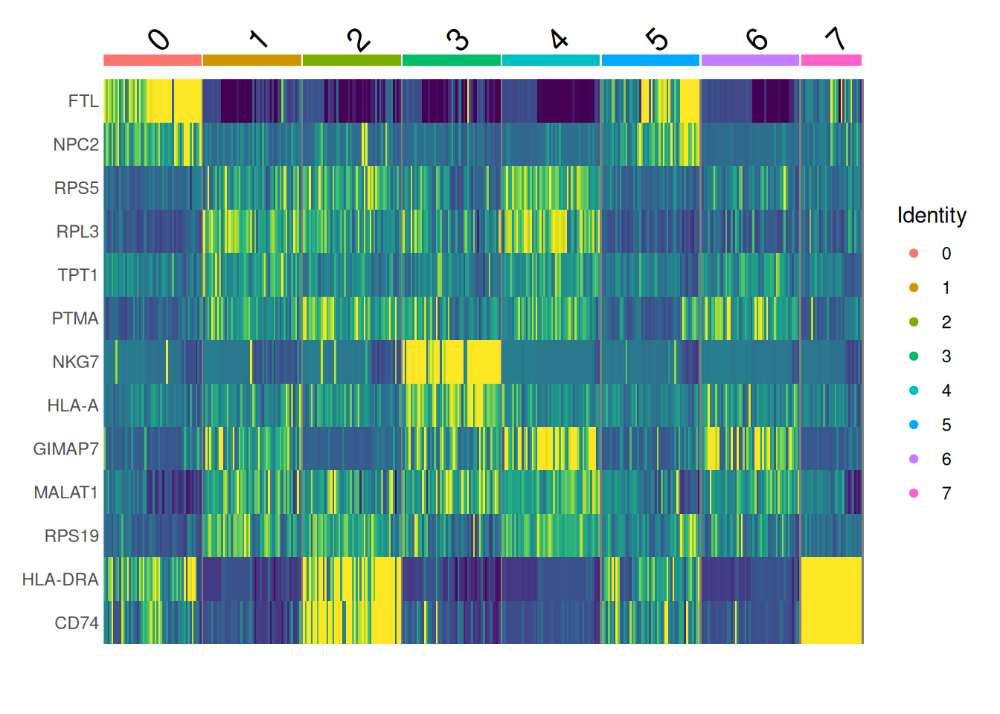
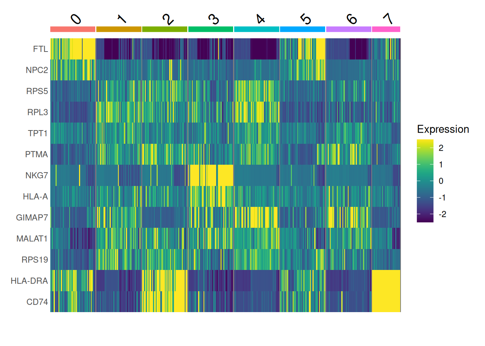
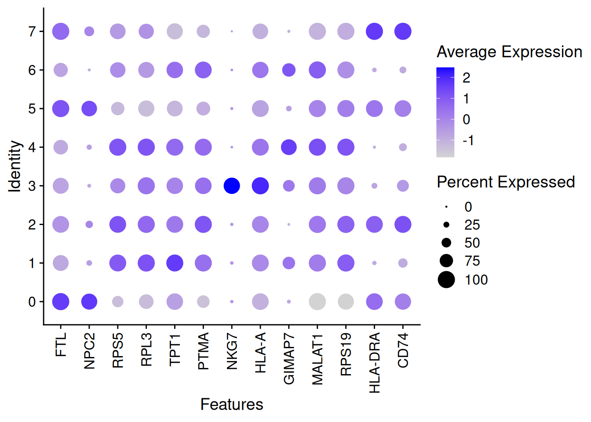
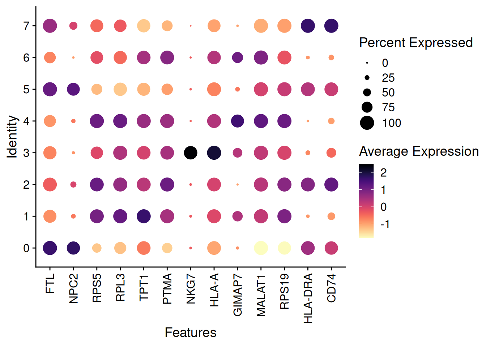

.libPaths(c('/usr/local/lib/R/site-library', '/usr/local/lib/R/library'))2 To use this notebook
- Go to ood.ccv.brown.edu (you will need an Oscar account).
- Go to ‘Clusters’ in the blue menu bar at the top and click the drop-down that says ‘>_OSCAR Shell Access’
- Go to your home folder and type
git clone https://github.com/compbiocore/intro_scrna_dscov.git - Look under
Interactive Appsin the blue menu bar and click onRStudio on SingularityunderExpert GUIs. Fill in the fields as follows:
Account: leave blank
Partition: leave blank
Number of hours: 2
Num Cores: 1
Memory: 100
Singularity Container Path:/oscar/data/shared/databases/workshops/dscov/intro_scrna_dscov/metadata/intro_scrna_dscov.sif
Path for rsession executable: leave blank
Package install Path: leave blank
R Module: leave blank
Additional Data Path: leave blank
- Once your job starts, click the button to connect to session.
- At the top of the screen you’ll see a menu bar that starts with ‘file’, click on ‘file’ and ‘open file’.
- Go to your home folder where you have cloned this repository and open up
notebooks/Intro.qmd: `
2.1 Introduction to scRNA-seq
What we will cover
* Seurat objects and importing data
* Data QC and filtering
* SCTransform normalization, clustering, dimension reduction
* Data integration
* Differential expression
* Data visualization
Much of this notebook is adapted from the Seurat vignettes https://satijalab.org/seurat, GitHub repository https://github.com/satijalab/seurat, and this wiki for comparison of integration methods: https://deepwiki.com/satijalab/seurat
2.2 Seurat objects overview
Important
In November of 2023, Seurat made a major upgrade to Seurat v5 (https://github.com/satijalab/seurat/releases), which included many new functions and other changes (https://satijalab.org/seurat/articles/announcements.html#changes-in-seurat-v5), including some very big changes to the default behavior of Seurat. You will likely see different results depending on which version of Seurat you have used for your analysis. Feel free to come to our office hours if you want help setting up reproducible analyses using either version of Seurat.
This workshop focuses on using Seurat objects to structure your scRNA-seq data (https://github.com/satijalab/seurat/wiki/Seurat), we will attempt to cover how to interact with Seurat objects in Seurat v4 and v5, but won’t exhaustively cover the differences between the two versions.
Let’s get started. First, we can set the .libPaths(), which essentially tells R that it should look for packages inside these locations inside the Singularity container.
We’ll also set a seed at the start of the notebook so that we can reproduce our results if we decide to re-run this notebook at some future date. We also set future.globals.maxSize, see the Seurat future vignette linked above for discussion about why we do this (basically we might be exceeding the allowed global variable size so we make that default bigger).
set.seed(61)
options(future.globals.maxSize = 4000 * 1024^2)Next, load all the libraries we need, including some Seurat data packages. The last lines will update the Seurat objects so that they are compatible with the newest version of Seurat.
library(RColorBrewer)
library(Seurat)
library(patchwork)
library(ggplot2)
library(dplyr)
library(hdf5r)
library(stringr)
library(biomaRt)
library(viridis)
library(SeuratDisk)
library(SeuratData)
library(msigdbr)
library(clustree)
library('ifnb.SeuratData')
library('pbmc3k.SeuratData')
data("ifnb")
data("pbmc3k")
ifnb <- UpdateSeuratObject(ifnb)
pbmc3k <- UpdateSeuratObject(pbmc3k)Here’s a schematic of a Seurat object:

- Each Seurat object is composed of different components:
assaysis a list of all the assays in the object.Defaults to
RNAassay, but you can add others (likeSCTfor normalized counts, shown in the figure above, could also be antibody-derived tags, etc.).You can see all assays using
Assays(ifnb), see which assay is the currently active assay by looking in theactive.assayslot (ifnb@active.assay) and switch between them using theDefaultAssay()function (DefaultAssay(ifnb) <- 'RNA').Each assay will store multiple transformations of the data in different
slots(orlayersin Seurat v5) – in the case ofRNAdata these slots are:@countscontains the raw counts.@datacontains the normalized counts.@scale.datacontains the scaled data for dimensional reduction.
The
slots(Seurat v4) orlayers(Seurat v5) store the data as a sparse matrix where the rows are gene and the columns are cells.In Seurat v4, you could access the raw counts like this:
GetAssayData(ifnb, assay='RNA', slot='counts'). This will still work in Seurat v5, but you’ll get a warning message. In Seurat v5 it is intended that you access the counts using theLayerDatafunction, like this:LayerData(ifnb, assay='RNA', layer='counts')In either version of Seurat
ifnb[['RNA']]$countswill also work.
meta.datais a matrix of all the cell-level metadata.- This will include information about which condition, timepoint, batch, etc. a for a given cell.
- It also includes metrics that will be relevant for QC, like
nCount_RNAandnFeature_RNAnCount_RNAis the total number of molecules (UMIs) detected within a cell.nFeature_RNAis the total number of genes detected within a cell.
- Once you have completed clustering, you’ll also see information about which cluster each cell has been assigned to.
- The different categories or columns in the
meta.dataare also calledIdentsin Seurat. - You can see the current
Identin theactive.identslot (ifnb@active.ident) and switch between them using theIdents()function (this will probably be important for running differential expression testing). - You can use
table(Idents(ifnb))for a quick summary of the number of cells in each grouping.
graphsis a list of the nearest neighbor graphs.- The objects stored in
graphsare cell x cell matrices containing the neighborhood overlap (Jaccard index) between every cell and its nearest neighbors.
- The objects stored in
reductionsis a list ofDimReducobjects.versioncontains information about which version of Seurat was used to make the object.- There are other optional slots, including
toolsandmiscthat can be populated by specific analysis tools (tools) or users can store their own additional information (misc).
2.3 Importing data and interacting with Seurat objects
We are using the SeuratData package for some test data, which is already installed in this container.
SeuratData::AvailableData() %>% data.frame() %>% dplyr::filter(Installed == 'TRUE') Dataset Version Summary species
ifnb.SeuratData ifnb 3.1.0 IFNB-Stimulated and Control PBMCs human
pbmc3k.SeuratData pbmc3k 3.1.4 3k PBMCs from 10X Genomics human
system ncells tech seurat default.dataset disk.datasets
ifnb.SeuratData PBMC 13999 10x v1 <NA> raw <NA>
pbmc3k.SeuratData PBMC 2700 10x v1 3.1.4 raw <NA>
other.datasets notes Installed InstalledVersion
ifnb.SeuratData processed <NA> TRUE 3.1.0
pbmc3k.SeuratData pbmc3k.final <NA> TRUE 3.1.4It is more likely that you are using Seurat with your own data – you can use the functions Read10X or Read10X_h5 to import data. Read10X_h5 works with H5 files – “Hierarchical Data Format (HDF5 or H5). H5 is a binary format that can compress and access data much more efficiently than text formats such as MEX, which is especially useful when dealing with large datasets.” https://support.10xgenomics.com/single-cell-gene-expression/software/pipelines/latest/advanced/h5_matrices. You can also use Read10X and give a path to a folder that contains your matrix, features, and barcode tsv files. After you have read in the 10X data, use it as the input to the CreateSeuratObject function.
We can look at the Seurat object we’ve loaded from SeuratData:
?ifnb
ifnbAn object of class Seurat
14053 features across 13999 samples within 1 assay
Active assay: RNA (14053 features, 0 variable features)
2 layers present: counts, dataThe ifnb dataset is 14,000 IFNB-Stimulated and Control PBMCs (peripheral blood mononuclear cells).
?pbmc3k
pbmc3kAn object of class Seurat
13714 features across 2700 samples within 1 assay
Active assay: RNA (13714 features, 0 variable features)
2 layers present: counts, dataThe pbmc3k dataset is 2,700 PBMCs (peripheral blood mononuclear cells).
We can also see that Seurat v5 assays store data in layers. These layers can store raw, un-normalized counts (layer=‘counts’), normalized data (layer=‘data’) or z-scored/variance-stabilized data (layer=‘scale.data’). What assays and meta.data are available?
ifnb@assays$RNA
Assay data with 14053 features for 13999 cells
First 10 features:
AL627309.1, RP11-206L10.2, LINC00115, NOC2L, KLHL17, PLEKHN1, HES4,
ISG15, AGRN, C1orf159 head(ifnb@meta.data) orig.ident nCount_RNA nFeature_RNA stim seurat_annotations
AAACATACATTTCC.1 IMMUNE_CTRL 3017 877 CTRL CD14 Mono
AAACATACCAGAAA.1 IMMUNE_CTRL 2481 713 CTRL CD14 Mono
AAACATACCTCGCT.1 IMMUNE_CTRL 3420 850 CTRL CD14 Mono
AAACATACCTGGTA.1 IMMUNE_CTRL 3156 1109 CTRL pDC
AAACATACGATGAA.1 IMMUNE_CTRL 1868 634 CTRL CD4 Memory T
AAACATACGGCATT.1 IMMUNE_CTRL 1581 557 CTRL CD14 MonoWe have an RNA assay, and metadata contains information about which experimental condition the cell came from (orig.ident and stim), the number of genes (nFeature_RNA) and molecules (nCount_RNA) in each cell. This particular object also comes pre-annotated (seurat_annotations).
If we look at the unique values in orig.ident, we see that there’s IMMUNE_CTRL and IMMUNE_STIM samples in one Seurat object.
table(ifnb@meta.data$orig.ident)
IMMUNE_CTRL IMMUNE_STIM
6548 7451 pbmc3k@assays$RNA
Assay data with 13714 features for 2700 cells
First 10 features:
AL627309.1, AP006222.2, RP11-206L10.2, RP11-206L10.9, LINC00115, NOC2L,
KLHL17, PLEKHN1, RP11-54O7.17, HES4 head(pbmc3k@meta.data) orig.ident nCount_RNA nFeature_RNA seurat_annotations
AAACATACAACCAC pbmc3k 2419 779 Memory CD4 T
AAACATTGAGCTAC pbmc3k 4903 1352 B
AAACATTGATCAGC pbmc3k 3147 1129 Memory CD4 T
AAACCGTGCTTCCG pbmc3k 2639 960 CD14+ Mono
AAACCGTGTATGCG pbmc3k 980 521 NK
AAACGCACTGGTAC pbmc3k 2163 781 Memory CD4 Ttable(pbmc3k@meta.data$orig.ident)
pbmc3k
2700 If we look at the unique values in orig.ident for the pbmc3k object, we see that there’s only pbmc3k samples.
2.4 Data QC
First, lets subset our datasets so they are smaller and easier to work with for this workshop.
pbmc3k <- subset(pbmc3k, downsample = 500)
ifnb <- subset(ifnb, downsample = 500)- For now, let’s merge the datasets to make our QC and filtering a bit smoother.
merge()merges the raw count matrices of two Seurat objects and creates a new Seurat object with the resulting combined raw count matrix.- To explicitly specify the original object any particular cell came from, you can set the
add.cell.idsparameter with an c(x, y) vector, which will prepend the given identifier to the beginning of each cell name. - The original project ID will remain stored in object meta data under
orig.ident.
all_data <- merge(x = ifnb, y = pbmc3k, add.cell.ids = c("ifnb", "pbmc3k"), project = 'pbmc')- We care about the percentage of reads that map to the mitochondrial genome because high mitochondrial reads in a cell can indicate that the cells are low-quality or dying cells
- The mitochondrial QC metrics are calcualted with the
PercentageFeatureSet()function, which calculates the percentage of counts originating from a set of features - We use the set of all genes starting with MT- as a set of mitochondrial genes – the format of the mt sequences will vary depending on which organism/genome is used…(might be ‘mt-’ for example).
rownames(all_data) %>% grep(pattern = '^mt-', ignore.case = TRUE, value = TRUE) [1] "MT-ND1" "MT-ND2" "MT-CO1" "MT-CO2" "MT-ATP8" "MT-ATP6" "MT-CO3"
[8] "MT-ND3" "MT-ND4L" "MT-ND4" "MT-ND5" "MT-ND6" "MT-CYB" - Then add the percent mitochondrial reads to the metadata:
all_data[["percent.mt"]] <- PercentageFeatureSet(all_data, pattern = "^MT-")- Before we plot, we can set the order of the object idents to whatever order we’d like:
Idents(all_data) <- 'orig.ident'
levels(all_data) <- c("pbmc3k", "IMMUNE_CTRL", "IMMUNE_STIM")- We can also look at plots showing the distribution of the
percent.mt,nFeature_RNAandnCount_RNA nFeature_RNAis the number of genesnCount_RNAis the number of UMIs (unique molecules – like counts)
VlnPlot(all_data, features = "nFeature_RNA")VlnPlot(all_data, features = "nCount_RNA")VlnPlot(all_data, features="percent.mt")FeatureScatter(all_data, feature1 = "nCount_RNA", feature2 = "nFeature_RNA")FeatureScatter(all_data, feature1 = "nCount_RNA", feature2 = "percent.mt")FeatureScatter(all_data, feature1 = "nFeature_RNA", feature2 = "percent.mt")You can also just use ggplot to make your own custom visualizations of the information in the metadata. We make a separate matrix called qc_data and sorting it based on the percent.mt column. Then we make our own ggplot and specify that the x and y axes should be nCount_RNA and nFeature_RNA and that the points should be colored based on percent.mt. Then, use scale_color_gradientn to specify how the points should be colored, specifying that the limit should be between 0 and 10 and that we should squish anything that is out of bounds (effectively making our limits 0 and >10).
qc_data <- all_data@meta.data[c('orig.ident','nCount_RNA','nFeature_RNA','percent.mt')] %>% arrange(percent.mt)
ggplot2::ggplot(qc_data, ggplot2::aes(x = nCount_RNA, y = nFeature_RNA, color = percent.mt)) +
ggplot2::geom_point() +
ggplot2:: scale_color_gradientn(colors = rev(brewer.pal(5, "Spectral")), limits = c(0,10), oob = (scales::squish)) +
ggplot2::facet_wrap(~orig.ident) +
ggplot2::theme_bw()
- Low quality cells or empty droplets might have very few genes (
nFeatures) - Dead or dying cells will also have high mitochondrial reads (
percent.mt) - Doublets or multiplets will have high gene counts (
nFeatures) - The total number of molecules (
nCount) detected in a cell corresponds with the number of genes (nFeatures) - Most of the cells have less than 2000 genes and less than 7000 or so UMIs.
- Very low mitochondrial counts from the
ifnbdata and the nFeature_RNA scatter plots look strange – perhaps this dataset was pre-filtered before being packaged into SeuratData. - In the
pbmc3kdata, we can see groups of cells with high mitochondrial counts, low UMI counts, and lower numbers of genes. - Our goal in QC filtering is to retain as much useful information as we can, while removing doublets, empty droplets, and dead cells.
- We will pick some thresholds for filtering based off of what we see in our data, keeping in mind that if you are doing this with your own data, your plots will probably look a bit different.
Important
We don’t get into it in this workshop, but an additional QC consideration is ambient RNA. Look at this document from 10x for more information: https://www.10xgenomics.com/analysis-guides/introduction-to-ambient-rna-correction
2.5 Data Filtering
- Let’s filter our data using
subset, we’ll keep cells that have between 500 and 7000 nFeature_RNA (genes) and less than 5% mitochondrial reads.
all_data_sub <- subset(all_data, subset = nFeature_RNA > 500 & nFeature_RNA < 7000 & percent.mt < 5)- You can re-examine your QC plots after filtering if you’d like:
qc_data_sub <- all_data_sub@meta.data[c('orig.ident','nCount_RNA','nFeature_RNA','percent.mt')] %>% arrange(percent.mt)
ggplot2::ggplot(qc_data_sub,ggplot2:: aes(x = nCount_RNA, y = nFeature_RNA, color = percent.mt)) +
ggplot2::geom_point() +
ggplot2::scale_color_gradientn(colors = rev(brewer.pal(5, "Spectral")), limits = c(0,10), oob = (scales::squish)) +
ggplot2::facet_wrap(~orig.ident) +
ggplot2::theme_bw()- We can also take a look at how many cells we lost from filtering:
table(all_data@meta.data$orig.ident)
IMMUNE_CTRL IMMUNE_STIM pbmc3k
500 500 500 table(all_data_sub@meta.data$orig.ident)
IMMUNE_CTRL IMMUNE_STIM pbmc3k
500 500 456 2.6 Normalization
2.6.1 Theory
scRNAseq data is normalized so that we can mitigate technical effects while preserving the biological signal in the data – we should be able to find the biological signal in cells irrespective of how deeply we sequenced the cell. The theory behind SCTransform (https://genomebiology.biomedcentral.com/articles/10.1186/s13059-019-1874-1) is very similar to the generalized linear models (GLMs) used in bulk RNAseq analysis packages like DESeq2 and edgeR. In DESeq2 a negative binomial model is fitted to the counts and the mean and dispersion (roughly speaking how variable the observed count will be from the mean count) estimates from that model are used as the test statistics for comparison between group and the same idea applies with SCTransform. SCTransform also pools information across genes with similar abundances in order to address the higher sparsity of single cell data.
Below is a side-by-side comparison of sctransform with NormalizeData, FindVariableFeatures and ScaleData on the PBMC3k data:

We also like this figure from the SCTransform paper, which shows how SCTransform (‘Pearson Residuals’) and the standard log-transformation approach (‘Log-normalization’) helps alleviate variance in your data from sequencing depth alone :

2.6.2 When should you not use SCTransform?
The paper states:
As our workflow leverages all genes (or a random subset) for the initial regularization, we make an implicit assumption that the majority of genes in the dataset do not exhibit significant biological variation...this assumption may be overly simplistic when performing scRNA-seq on a highly heterogeneous sample, we did not observe adverse affects when applying our model to human PBMC data, or any of the other datasets we examined.
SCTransform might not work well if your data is highly heterogeneous and you expect that a high proportion of genes will exhibit significant biological variation across your samples. In this case, we would recommend the more standard workflow of NormalizeData, FindVariableFeatures, and ScaleData.
2.6.3 SCTransform versions
Seurat v5 runs SCTransform v2 (https://satijalab.org/seurat/archive/v4.3/sctransform_v2_vignette) by default, while Seurat v4 runs SCTransform v1 by default. SCTransform v2 “improves speed and memory consumption, the stability of parameter estimates, the identification of variable features, and the the ability to perform downstream differential expression analyses.” This means you might get different results if you run Seurat v5 and re-normalize data that you have previously processed with Seurat v4. If you want to change from the default veresion of SCTransform, you can add the argument vst.flavor = "v1" (or vst.flavor = "v2"))
2.6.4 Running SCTransform
We will normalize using SCTransform and you might get see a warning that says ‘iteration limit reached’ when you run the function. This warning can be ignored (https://github.com/satijalab/sctransform/issues/25) because the parameter estimation generating this warning is regularized later anyway. You can use the vars.to.regress argument to regress out nuisance variables (like cell cycle, batch effects, or percent.mt). By default SCTransform will only return data for variable genes in the scale data slot – adding the return.only.var.genes = FALSE argument to the function call to turn this option off (https://github.com/satijalab/seurat/issues/3553). In previous versions of Seurat, you would have to split your object into a list of Seurat objects based on the orig.ident and then run SCTransform on the list, which is not necessary in Seurat v5 – but we do have to split the layers by their orig.ident:
all_data_sub[["RNA"]] <- split(all_data_sub[["RNA"]], f = all_data_sub$orig.ident)Warning: Input is a v3 assay and `split()` only works for v5 assays; converting
• to a v5 assayWarning: Assay RNA changing from Assay to Assay5start.time <- Sys.time()
all_data_sub <- SCTransform(all_data_sub, vars.to.regress = "percent.mt", verbose = FALSE)
end.time <- Sys.time()
end.time - start.timeTime difference of 19.10482 secsThen run PCA
all_data_sub <- RunPCA(all_data_sub)PC_ 1
Positive: FTL, TIMP1, FTH1, LYZ, TYROBP, CST3, FCER1G, S100A9, SOD2, LGALS1
S100A8, APOBEC3A, S100A4, HLA-DRA, LGALS3, FCN1, TYMP, S100A11, IFITM3, SAT1
AIF1, S100A6, ANXA5, CD63, CTSB, HLA-DRB1, LST1, PSAP, IL8, NPC2
Negative: RPL3, RPS6, RPS18, LTB, RPL13, RPL13A, RPL21, RPS27A, RPS3A, RPS3
RPS27, RPL34, GIMAP7, RPL7, MALAT1, CD3D, RPS15A, CCR7, RPS4X, RPS2
LDHB, RPS14, RPS12, RPL9, RPL32, RPL10, RPL23A, RPL31, RPSA, RPS5
PC_ 2
Positive: NKG7, CCL5, GZMB, GNLY, PRF1, CST7, GZMA, CTSW, FGFBP2, GZMH
CCL4, CLIC3, FCGR3A, APOBEC3G, KLRD1, CD247, GZMM, B2M, CHST12, HOPX
UBB, C1orf21, AKR1C3, APMAP, IGFBP7, CD7, RARRES3, ACTB, SRGN, C12orf75
Negative: RPL13, RPS18, RPL13A, RPL32, HLA-DRA, RPS2, RPL10, RPL3, RPS12, RPL34
LTB, RPS6, RPS14, RPS4X, RPL18A, RPS3A, RPS5, RPL11, CD74, RPL7
RPL10A, RPS15A, CCR7, RPS27, RPL19, RPS13, RPS8, RPL21, RPL12, RPS27A
PC_ 3
Positive: CD3D, GIMAP7, IL32, CD7, SOD2, CD3E, GIMAP5, CD2, CCL5, IL7R
LCK, GIMAP4, LDHB, RPL34, RARRES3, TIMP1, ANXA1, CTSL, CD3G, APOBEC3A
RPS14, LAT, RPS12, ZFP36L2, NKG7, RPL3, PABPC1, IFI27, RPS3, LTB
Negative: CD74, HLA-DRA, HLA-DQA1, HLA-DPB1, HLA-DRB1, HLA-DPA1, HLA-DQB1, CD79A, HERPUD1, MS4A1
HLA-DMA, CD83, HLA-DRB5, IRF8, CD79B, PMAIP1, REL, HSP90AB1, BIRC3, SYNGR2
HSPD1, CST3, CCR7, PRMT1, ID3, RAN, RPL22L1, LYZ, CYCS, BLNK
PC_ 4
Positive: S100A9, S100A8, LYZ, FTH1, FTL, FCN1, TYROBP, AIF1, CST3, S100A4
S100A6, LST1, LGALS2, COTL1, CACYBP, CD14, OAZ1, SRSF2, LGALS1, NOP58
SOD1, GIMAP7, CREM, GPX1, DDIT4, YPEL5, SAT1, TRAT1, SRSF7, CFD
Negative: CD74, HLA-DRA, HLA-DPB1, CD79A, HLA-DQA1, HLA-DPA1, NKG7, HLA-DQB1, CCL5, HLA-DRB1
CST7, CCL4, CD79B, MS4A1, GNLY, TXN, GZMB, CTSW, TIMP1, SOD2
ISG20, GZMA, FGFBP2, PTPRCAP, GZMH, HLA-DMA, B2M, APOBEC3G, PRF1, SLAMF7
PC_ 5
Positive: SOD2, JUNB, HSPB1, HSPA1A, CD69, JUN, SRSF7, NFKBIA, CCL4, APOBEC3A
CACYBP, DDIT4, TIMP1, SRSF2, HSPA8, CTSL, HSP90AB1, CLK1, TXN, HSPH1
DNAJB1, NOP58, HSP90AA1, CREM, YPEL5, IL1RN, EIF5, DNAJB6, ZFAND2A, TSC22D3
Negative: CST3, LYZ, S100A9, S100A8, NKG7, TYROBP, GSTP1, AIF1, GNLY, GZMB
LGALS2, LST1, FCN1, S100A6, LGALS1, COTL1, FTH1, CCL5, PYCARD, CEBPD
CST7, TMSB4X, ALOX5AP, RPS2, TKT, PRF1, CTSS, RPL3, AP1S2, FGFBP2 We can make an elbow plot:
ElbowPlot(all_data_sub)Based on this plot, we get diminishing information returned once we get above ~10-15 PCs. We will use this information when we run clustering.
2.7 Integration
Integration of single-cell sequencing datasets, for example across experimental batches, donors, or conditions, is often an important step in scRNA-seq workflows. Integrative analysis can help to match shared cell types and states across datasets, which can boost statistical power, and most importantly, facilitate accurate comparative analysis across datasets.
While the goal of matching shared cell types across datasets may be important for many problems, users may also be concerned about which method to use, or that integration could result in a loss of biological resolution. In Seurat v5, we introduce more flexible and streamlined infrastructure to run different integration algorithms with a single line of code. This makes it easier to explore the results of different integration methods, and to compare these results to a workflow that excludes integration steps.
Seurat v5 enables streamlined integrative analysis using the IntegrateLayers function. The method currently supports four integration methods by default. Each of these methods performs integration in low-dimensional space, and returns a dimensional reduction (i.e. integrated.rpca) that aims to co-embed shared cell types across batches (samples). These integration methods can be divided into two categories:
Anchor-based methods: CCA, RPCA, and JointPCA, which rely on identifying pairs of cells (anchors) that are mutual nearest neighbors between datasets
Non-anchor-based methods: Harmony, which uses soft clustering and iterative correction
- CCA integration (method=CCAIntegration)
- RPCA integration (method=RPCAIntegration)
- Joint PCA integration (method=JointPCAIntegration)
- Harmony (method=HarmonyIntegration)
2.7.1 Canonical Correlation Analysis (CCA) Integration
CCA (Canonical Correlation Analysis) Integration was the first integration method developed for Seurat. It identifies common sources of variation between datasets by finding linear combinations of features with maximum correlation.
CCA integration:
- Performs canonical correlation analysis between pairs of datasets
- L2-normalizes the cell embeddings to focus on correlation strength rather than magnitude
- Identifies mutual nearest neighbors (anchors) between datasets in the CCA space
- Uses these anchors to correct the data and align matching cell populations
By identifying shared sources of variation between datasets, CCA is well-suited for identifying anchors when cell types are conserved, but there are very substantial differences in gene expression across experiments. CCA-based integration therefore enables integrative analysis when experimental conditions or disease states introduce very strong expression shifts, or when integrating datasets across modalities and species. However, CCA-based integration may also lead to overcorrection, especially when a large proportion of cells are non-overlapping across datasets.
2.7.2 Reciprocal Principal Components Analysis (RPCA) Integration
RPCA (Reciprocal PCA) Integration uses principal component analysis for integration. Unlike CCA, which finds correlations between datasets, RPCA projects each dataset onto the other’s PCA space.
RPCA integration:
- Computes PCA on each dataset separately
- Projects each dataset onto the other’s PCA space (reciprocal projection)
- L2-normalizes the cell embeddings
- Identifies mutual nearest neighbors (anchors) between datasets in the projected space
- Uses these anchors to correct the data and align matching cell populations
We recommend RPCA during integrative analysis where: A substantial fraction of cells in one dataset have no matching type in the other, datasets that originate from the same platform (i.e. multiple lanes of 10x genomics), or if there are a large number of datasets or cells to integrate.
2.7.3 JointPCA Integration
JointPCA (Joint PCA) Integration first combines all datasets and then performs PCA on the combined data. This method is simpler but can be effective when datasets are already somewhat aligned or have minor batch effects.
JointPCA integration:
- Merges the datasets into a single matrix
- Performs PCA on the combined data
- L2-normalizes the cell embeddings
- Identifies mutual nearest neighbors (anchors) between original datasets in the joint PCA space
- Uses these anchors to correct the data and align matching cell populations
JointPCA is often faster than CCA or RPCA but may be less effective for datasets with substantial differences or batch effects.
2.7.4 Harmony Integration
Harmony Integration is a different approach developed by the Korsunsky et al. team (https://doi.org/10.1038/s41592-019-0619-0). Instead of using an anchor-based approach, Harmony uses soft clustering and iterative correction to align datasets.
Harmony integration:
- Performs PCA on the combined datasets
- Applies soft clustering to group cells by similarity
- Iteratively corrects cluster assignments and cell embeddings to align datasets
- Uses ridge regression to minimize the effect of dataset-specific variation
Harmony is generally faster than anchor-based methods and often performs well on datasets with complex batch effects.
We will run CCAIntegration (this was the default flavor of integration in previous versions of Seurat), JointPCAIntegration, HarmonyIntegration, and RPCAIntegration. Note that we are specifying that we used SCT normalization:
start.time <- Sys.time()
all_data_sub<- IntegrateLayers(
object = all_data_sub, method = CCAIntegration,
orig.reduction = "pca", new.reduction = "integrated.cca", normalization.method = "SCT",
verbose = FALSE
)
end.time <- Sys.time()
end.time - start.timeTime difference of 11.29752 secsstart.time <- Sys.time()
all_data_sub <- IntegrateLayers(
object = all_data_sub, method = JointPCAIntegration,
orig.reduction = "pca", new.reduction = "integrated.jpca", normalization.method = "SCT",
verbose = FALSE
)
end.time <- Sys.time()
end.time - start.timeTime difference of 8.645848 secsstart.time <- Sys.time()
all_data_sub <- IntegrateLayers(
object = all_data_sub, method = HarmonyIntegration,
orig.reduction = "pca", new.reduction = "harmony", normalization.method = "SCT",
verbose = FALSE
)The `features` argument is ignored by `HarmonyIntegration`.
This message is displayed once per session.end.time <- Sys.time()
end.time - start.timeTime difference of 1.208647 secsstart.time <- Sys.time()
all_data_sub <- IntegrateLayers(
object = all_data_sub, method = RPCAIntegration,
orig.reduction = "pca", new.reduction = "integrated.rpca", normalization.method = "SCT",
verbose = FALSE
)
end.time <- Sys.time()
end.time - start.timeTime difference of 10.72018 secs2.8 Clustering
Seurat will cluster your cells into groups of cells with similar expression patterns. The first step is FindNeighbors, which will construct a K-nearest neighbor (KNN) graph based on the euclidean distance in PCA space, and refine the edge weights between any two cells based on the shared overlap in their local neighborhoods (Jaccard similarity). To cluster the cells, we run FindClusters to apply the Louvain algorithm to iteratively group cells together, with the goal of optimizing the standard modularity function. FindClusters takes a resolution argument (defaults to a value of 0.8), which sets the granularity of the clustering, setting this parameter between 0.4-1.2 typically returns good results for single-cell datasets of around 3K cells but the resolution might increase for larger datasets. Use a value above 1 if you want a larger number of communities (clusters), and a value below 1 if you want a smaller number of communities.
all_data_sub <- FindNeighbors(all_data_sub, dims = 1:10, reduction = "pca")Computing nearest neighbor graphComputing SNNall_data_sub <- FindClusters(all_data_sub, resolution = .6, cluster.name = "unintegrated_clusters")Modularity Optimizer version 1.3.0 by Ludo Waltman and Nees Jan van Eck
Number of nodes: 1456
Number of edges: 45109
Running Louvain algorithm...
Maximum modularity in 10 random starts: 0.8890
Number of communities: 11
Elapsed time: 0 secondsall_data_sub <- FindNeighbors(all_data_sub, reduction = "integrated.cca", dims = 1:10)Computing nearest neighbor graph
Computing SNNall_data_sub <- FindClusters(all_data_sub, resolution = .6, cluster.name = "cca_clusters")Modularity Optimizer version 1.3.0 by Ludo Waltman and Nees Jan van Eck
Number of nodes: 1456
Number of edges: 52126
Running Louvain algorithm...
Maximum modularity in 10 random starts: 0.8583
Number of communities: 8
Elapsed time: 0 secondsall_data_sub <- FindNeighbors(all_data_sub, reduction = "integrated.jpca", dims = 1:10)Computing nearest neighbor graph
Computing SNNall_data_sub <- FindClusters(all_data_sub, resolution = .6, cluster.name = "jpca_clusters")Modularity Optimizer version 1.3.0 by Ludo Waltman and Nees Jan van Eck
Number of nodes: 1456
Number of edges: 51813
Running Louvain algorithm...
Maximum modularity in 10 random starts: 0.8688
Number of communities: 8
Elapsed time: 0 secondsall_data_sub <- FindNeighbors(all_data_sub, reduction = "harmony", dims = 1:10)Computing nearest neighbor graph
Computing SNNall_data_sub <- FindClusters(all_data_sub, resolution = .6, cluster.name = "harmony_clusters")Modularity Optimizer version 1.3.0 by Ludo Waltman and Nees Jan van Eck
Number of nodes: 1456
Number of edges: 50989
Running Louvain algorithm...
Maximum modularity in 10 random starts: 0.8521
Number of communities: 9
Elapsed time: 0 secondsall_data_sub <- FindNeighbors(all_data_sub, reduction = "integrated.rpca", dims = 1:10)Computing nearest neighbor graph
Computing SNNall_data_sub <- FindClusters(all_data_sub, resolution = .6, cluster.name = "rpca_clusters")Modularity Optimizer version 1.3.0 by Ludo Waltman and Nees Jan van Eck
Number of nodes: 1456
Number of edges: 49294
Running Louvain algorithm...
Maximum modularity in 10 random starts: 0.8475
Number of communities: 8
Elapsed time: 0 secondsRun UMAP (Uniform Manifold Approximation and Projection) dimensional reduction technique on the unintegrated data and the different integration methods:
all_data_sub <- RunUMAP(all_data_sub, reduction = "pca", dims = 1:10, reduction.name = "umap.unintegrated")Warning: The default method for RunUMAP has changed from calling Python UMAP via reticulate to the R-native UWOT using the cosine metric
To use Python UMAP via reticulate, set umap.method to 'umap-learn' and metric to 'correlation'
This message will be shown once per session13:30:15 UMAP embedding parameters a = 0.9922 b = 1.11213:30:15 Read 1456 rows and found 10 numeric columns13:30:15 Using Annoy for neighbor search, n_neighbors = 3013:30:15 Building Annoy index with metric = cosine, n_trees = 500% 10 20 30 40 50 60 70 80 90 100%[----|----|----|----|----|----|----|----|----|----|**************************************************|
13:30:15 Writing NN index file to temp file /tmp/RtmpXqTft1/file1e66443af80802
13:30:15 Searching Annoy index using 1 thread, search_k = 3000
13:30:16 Annoy recall = 100%
13:30:17 Commencing smooth kNN distance calibration using 1 thread with target n_neighbors = 30
13:30:18 Initializing from normalized Laplacian + noise (using RSpectra)
13:30:18 Commencing optimization for 500 epochs, with 55744 positive edges
13:30:18 Using rng type: pcg
13:30:21 Optimization finishedall_data_sub <- RunUMAP(all_data_sub, reduction = "integrated.cca", dims = 1:10, reduction.name = "umap.cca")13:30:21 UMAP embedding parameters a = 0.9922 b = 1.112
13:30:21 Read 1456 rows and found 10 numeric columns
13:30:21 Using Annoy for neighbor search, n_neighbors = 30
13:30:21 Building Annoy index with metric = cosine, n_trees = 50
0% 10 20 30 40 50 60 70 80 90 100%
[----|----|----|----|----|----|----|----|----|----|
**************************************************|
13:30:21 Writing NN index file to temp file /tmp/RtmpXqTft1/file1e66445b9bacb2
13:30:21 Searching Annoy index using 1 thread, search_k = 3000
13:30:21 Annoy recall = 100%
13:30:22 Commencing smooth kNN distance calibration using 1 thread with target n_neighbors = 30
13:30:24 Initializing from normalized Laplacian + noise (using RSpectra)
13:30:24 Commencing optimization for 500 epochs, with 58396 positive edges
13:30:24 Using rng type: pcg
13:30:26 Optimization finishedall_data_sub <- RunUMAP(all_data_sub, reduction = "integrated.jpca", dims = 1:10, reduction.name = "umap.jpca")13:30:26 UMAP embedding parameters a = 0.9922 b = 1.112
13:30:26 Read 1456 rows and found 10 numeric columns
13:30:26 Using Annoy for neighbor search, n_neighbors = 30
13:30:26 Building Annoy index with metric = cosine, n_trees = 50
0% 10 20 30 40 50 60 70 80 90 100%
[----|----|----|----|----|----|----|----|----|----|
**************************************************|
13:30:27 Writing NN index file to temp file /tmp/RtmpXqTft1/file1e66442972fd80
13:30:27 Searching Annoy index using 1 thread, search_k = 3000
13:30:27 Annoy recall = 100%
13:30:28 Commencing smooth kNN distance calibration using 1 thread with target n_neighbors = 30
13:30:30 Initializing from normalized Laplacian + noise (using RSpectra)
13:30:30 Commencing optimization for 500 epochs, with 58918 positive edges
13:30:30 Using rng type: pcg
13:30:32 Optimization finishedall_data_sub <- RunUMAP(all_data_sub, reduction = "harmony", dims = 1:10, reduction.name = "umap.harmony")13:30:32 UMAP embedding parameters a = 0.9922 b = 1.112
13:30:32 Read 1456 rows and found 10 numeric columns
13:30:32 Using Annoy for neighbor search, n_neighbors = 30
13:30:32 Building Annoy index with metric = cosine, n_trees = 50
0% 10 20 30 40 50 60 70 80 90 100%
[----|----|----|----|----|----|----|----|----|----|
**************************************************|
13:30:32 Writing NN index file to temp file /tmp/RtmpXqTft1/file1e66441abc6662
13:30:32 Searching Annoy index using 1 thread, search_k = 3000
13:30:33 Annoy recall = 100%
13:30:33 Commencing smooth kNN distance calibration using 1 thread with target n_neighbors = 30
13:30:35 Initializing from normalized Laplacian + noise (using RSpectra)
13:30:35 Commencing optimization for 500 epochs, with 57540 positive edges
13:30:35 Using rng type: pcg
13:30:37 Optimization finishedall_data_sub <- RunUMAP(all_data_sub, reduction = "integrated.rpca", dims = 1:10, reduction.name = "umap.rpca")13:30:38 UMAP embedding parameters a = 0.9922 b = 1.112
13:30:38 Read 1456 rows and found 10 numeric columns
13:30:38 Using Annoy for neighbor search, n_neighbors = 30
13:30:38 Building Annoy index with metric = cosine, n_trees = 50
0% 10 20 30 40 50 60 70 80 90 100%
[----|----|----|----|----|----|----|----|----|----|
**************************************************|
13:30:38 Writing NN index file to temp file /tmp/RtmpXqTft1/file1e664421291c83
13:30:38 Searching Annoy index using 1 thread, search_k = 3000
13:30:38 Annoy recall = 100%
13:30:39 Commencing smooth kNN distance calibration using 1 thread with target n_neighbors = 30
13:30:41 Initializing from normalized Laplacian + noise (using RSpectra)
13:30:41 Commencing optimization for 500 epochs, with 57330 positive edges
13:30:41 Using rng type: pcg
13:30:43 Optimization finishedp1 <- DimPlot(
all_data_sub,
reduction = "umap.unintegrated",
group.by = "orig.ident",
label.size = 2,
pt.size = .5,
alpha = .25
)
p2 <- DimPlot(
all_data_sub,
reduction = "umap.cca",
group.by = "orig.ident",
label.size = 2,
pt.size = .5,
alpha = .25
)
p3 <- DimPlot(
all_data_sub,
reduction = "umap.jpca",
group.by = "orig.ident",
label.size = 2,
pt.size = .5,
alpha = .25
)
p4 <- DimPlot(
all_data_sub,
reduction = "umap.harmony",
group.by = "orig.ident",
label.size = 2,
pt.size = .5,
alpha = .25
)
p5 <- DimPlot(
all_data_sub,
reduction = "umap.rpca",
group.by = "orig.ident",
label.size = 2,
pt.size = .5,
alpha = .25
)Patchwork to view the plots together
p1+p2+p3+p4+p5+plot_layout(ncol = 3, guides = "collect")
Once integrative analysis is complete, you can rejoin the layers - which collapses the individual datasets together and recreates the original counts and data layers. You will need to do this before performing any differential expression analysis. However, you can always re-split the layers in case you would like to re-perform integrative analysis.
all_data_sub <- JoinLayers(all_data_sub, assay ='RNA')We can also see how well the pre-populated cell annotations and Seurat clusters agree, with a table where the rpca_clusters are rows and cell annotations are rows:
table(all_data_sub$seurat_annotations, all_data_sub$rpca_clusters)
0 1 2 3 4 5 6 7
B 0 0 125 0 0 0 0 0
B Activated 0 0 28 0 0 0 0 0
CD14 Mono 294 1 0 0 0 9 0 0
CD14+ Mono 82 0 0 0 0 3 0 0
CD16 Mono 2 0 0 0 0 78 0 0
CD4 Memory T 0 119 0 0 5 0 10 0
CD4 Naive T 0 37 1 0 121 0 24 0
CD8 T 0 16 1 74 1 0 2 0
DC 7 0 1 0 0 0 0 31
Eryth 1 2 0 0 0 2 0 0
FCGR3A+ Mono 1 0 0 0 0 21 0 0
Memory CD4 T 0 66 1 1 1 0 11 0
Mk 5 5 0 0 3 3 1 0
Naive CD4 T 0 114 0 1 12 0 4 0
NK 0 0 0 70 0 0 2 0
pDC 0 1 6 0 1 0 1 0
Platelet 1 0 0 0 0 0 0 0
T activated 0 2 1 1 0 0 43 0We can also compare dimplots with different labels.
Idents(all_data_sub) <- 'seurat_annotations'
plot1 <- DimPlot(all_data_sub)
LabelClusters(plot1, id = "ident", box= TRUE, size = 5, repel = T, fill = 'white', alpha = .75)
Idents(all_data_sub) <- 'rpca_clusters'
plot2 <- DimPlot(all_data_sub)
LabelClusters(plot2, id = "ident", box= TRUE, size = 5, repel = T, fill = 'white', alpha = .75)
2.8.1 Clustering resolution selection
You can use the clustree package to get a sense of how the resolution you select will impact the clustering.
First, try running the clustering across a range of resolutions:
resolution.range <- seq(from = 0, to = 1.2, by = 0.1)
tree <- FindClusters(all_data_sub, resolution = resolution.range)Then we can look at the clustering tree.
clustree(tree)The size of the dots indicates how many cells are in each cluster and the color indicates the resolution used. At the top is showing us the clustering results from resolution = 0, and moving down the tree we can see clusters splitting out into smaller sub-clusters as we reach higher resolutions. If you see situations where clusters split and then re-cluster, this might be a sign that you are getting into over-clustering territory.
2.9 Differential Expression Analysis
The bulk of Seurat’s differential expression features can be accessed through the FindMarkers() or FindAllMarkers() functions. By default, Seurat performs differential expression (DE) testing based on the non-parametric Wilcoxon rank sum test. To test for DE genes between two specific groups of cells, use FindMarkers() and specify the ident.1 and ident.2 parameters. Use FindAllMarkers() to test each ident to all other idents. If you have a more complex experimental design, Seurat might not be the best choice and you can come visit us at office hours to discuss your options.
Since we normalized using SCTransform, we have to run PrepSCTFindMarkers() first. Given a merged object with multiple SCT models, this function uses minimum of the median UMI (calculated using the raw UMI counts) of individual objects to reverse the individual SCT regression model using minimum of median UMI as the sequencing depth covariate. The counts slot of the SCT assay is replaced with recorrected counts and the data slot is replaced with log1p of recorrected counts. Then set the DefaultAssay to be the RNA assay.
Idents(all_data_sub) <- "orig.ident"
all_data_sub <- PrepSCTFindMarkers(all_data_sub)Found 3 SCT models. Recorrecting SCT counts using minimum median counts: 1636.5DefaultAssay(all_data_sub) <- "RNA"
stim_vs_ctrl <- FindMarkers(all_data_sub, ident.1 = "IMMUNE_STIM", ident.2 = "IMMUNE_CTRL")
head(stim_vs_ctrl %>% dplyr::filter(p_val_adj < .05 & avg_log2FC > 1)) p_val avg_log2FC pct.1 pct.2 p_val_adj
IFIT3 2.304328e-158 56.44791 0.934 0.060 3.445661e-154
ISG15 7.479361e-152 399.60034 0.988 0.322 1.118389e-147
IFIT1 9.416450e-152 53.38548 0.904 0.036 1.408042e-147
ISG20 2.594336e-148 27.87676 0.988 0.410 3.879311e-144
IFI6 1.526537e-141 28.76951 0.942 0.180 2.282630e-137
MX1 8.625130e-138 15.71071 0.894 0.098 1.289716e-133The results data frame has the following columns :
p_val : p-value (unadjusted)
avg_log2FC : log fold-change of the average expression between the two groups. Positive values indicate that the feature is more highly expressed in the first group.
pct.1 : The percentage of cells where the feature is detected in the first group
pct.2 : The percentage of cells where the feature is detected in the second group
p_val_adj : Adjusted p-value, based on Bonferroni correction using all features in the dataset.If the ident.2 argument is omitted, FindMarkers will test for differentially expressed features between the group specified by ident.1 and all other cells. Additionally, the parameter only.pos can be set to TRUE to only search for positive markers, i.e. features that are more highly expressed in the ident.1 group.
stim_vs_all <- FindMarkers(all_data_sub, ident.1 = "IMMUNE_STIM", only.pos = T)
head(stim_vs_all %>% dplyr::filter(p_val_adj < .05 & avg_log2FC > 1)) p_val avg_log2FC pct.1 pct.2 p_val_adj
IFIT3 6.980485e-236 56.59723 0.934 0.084 1.043792e-231
IFIT1 7.150314e-227 54.24998 0.904 0.064 1.069187e-222
ISG20 8.852470e-204 20.15248 0.988 0.428 1.323710e-199
ISG15 8.337627e-203 400.53542 0.988 0.384 1.246725e-198
IFIT2 9.924276e-182 41.32732 0.756 0.043 1.483977e-177
RSAD2 6.594093e-161 56.68649 0.710 0.053 9.860147e-157We can switch idents to find marker genes for the clusters:
Idents(all_data_sub) <- 'rpca_clusters'Use FindAllMarkers to compare each cluster to all the other clusters. For the sake of speed, we are selecting only positive genes that are expressed in at least 90% of the cells for a given cluster:
rpca_markers <- FindAllMarkers(all_data_sub, min.pct = .90, only.pos=TRUE)Calculating cluster 0Calculating cluster 1Calculating cluster 2Calculating cluster 3Calculating cluster 4Calculating cluster 5Calculating cluster 6Calculating cluster 7Look at the marker genes with the biggest fold change per cluster
top_cluster_markers <-
rpca_markers %>%
group_by(cluster) %>%
dplyr::filter(p_val_adj <= 0.05) %>%
dplyr::filter(avg_log2FC > 1) %>%
dplyr::filter(pct.1 > .9) %>%
slice_max(n = 2, order_by = abs(avg_log2FC))
top_cluster_markers# A tibble: 13 × 7
# Groups: cluster [7]
p_val avg_log2FC pct.1 pct.2 p_val_adj cluster gene
<dbl> <dbl> <dbl> <dbl> <dbl> <fct> <chr>
1 2.03e-162 335. 1 0.921 3.03e-158 0 FTL
2 3.85e-140 108. 0.954 0.322 5.76e-136 0 NPC2
3 4.47e- 40 51.7 0.983 0.859 6.69e- 36 1 RPS5
4 1.09e- 76 44.9 1 0.97 1.62e- 72 1 RPL3
5 2.83e- 6 57.8 0.988 0.982 4.23e- 2 2 TPT1
6 6.89e- 17 27.9 0.994 0.926 1.03e- 12 2 PTMA
7 3.95e-172 62.4 0.946 0.086 5.90e-168 3 NKG7
8 4.74e- 17 52.9 1 0.985 7.08e- 13 3 HLA-A
9 7.01e- 47 1.09 0.917 0.421 1.05e- 42 4 GIMAP7
10 5.59e- 15 149. 1 1 8.36e- 11 5 MALAT1
11 3.89e- 10 49.7 1 0.991 5.82e- 6 5 RPS19
12 1.13e- 22 234. 1 0.566 1.69e- 18 7 HLA-DRA
13 2.89e- 21 225. 1 0.745 4.32e- 17 7 CD74 Make a FeaturePlot to look at the expression of specific genes. It will plot the data slot from the default assay. We can switch the default assay to SCT first and specify that we want to use the data slot (log1p(counts)):
DefaultAssay(all_data_sub) <- "SCT"
FeaturePlot(all_data_sub, features = c("CCL3"), reduction = 'umap.rpca', order = T, slot = 'data')We can also make a heatmap of the cluster markers. Seurat heatmaps use the scale.data slot by default.
DoHeatmap(subset(all_data_sub, downsample = 50), features = top_cluster_markers$gene) 
We can customize Seurat figures the same way you would customize other ggplot2 figures, like using different colors:
DoHeatmap(subset(all_data_sub, downsample = 50), features = top_cluster_markers$gene) & viridis::scale_fill_viridis() Scale for fill is already present.
Adding another scale for fill, which will replace the existing scale.
We can adjust which legends are shown, like this:
DoHeatmap(subset(all_data_sub, downsample = 50), features = top_cluster_markers$gene) & viridis::scale_fill_viridis() & ggplot2::guides(fill=FALSE)Scale for fill is already present.
Adding another scale for fill, which will replace the existing scale.Warning: The `<scale>` argument of `guides()` cannot be `FALSE`. Use "none" instead as
of ggplot2 3.3.4.
Or like this:
DoHeatmap(subset(all_data_sub, downsample = 50), features = top_cluster_markers$gene) & viridis::scale_fill_viridis() & ggplot2::guides(colour=FALSE)Scale for fill is already present.
Adding another scale for fill, which will replace the existing scale.
Another helpful visualization from Seurat is DotPlot. The size of each dot indicates the percentage of cells expressing the feature and the color is the average expression level. It uses the scale.data slot by default.
DotPlot(all_data_sub, features = top_cluster_markers$gene) +
theme(axis.text.x = element_text(angle=90, vjust=.5, hjust=1))
We can use more custom colors:
DotPlot(all_data_sub, features = top_cluster_markers$gene) &
viridis::scale_color_viridis(option = "magma", direction = -1) &
theme(axis.text.x = element_text(angle=90, vjust=.5, hjust=1))Scale for colour is already present.
Adding another scale for colour, which will replace the existing scale.
2.10 Conclusion
Thanks for joining! If you have questions, you can stop by our Zoom office hours. For more information, consult the CCV calendar: https://events.brown.edu/ccv/all